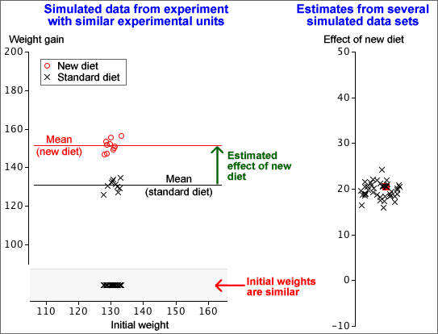

If you don't want to print now,
Relationship between two numerical variables
Scatterplots, correlation coefficients and least squares lines honestly summarise the relationship between two numerical variables, Y and X.
However they can sometimes give a misleading impression about the relationship. The problem arises when other variables are also associated with both Y and X.
The marginal and conditional relationships between Y and X are often different and may even be in a different direction.
Lurking (or hidden) variables
If the marginal relationship between X and Y is different from their conditional relationship given Z, but Z has either not been recorded or is ignored when analysing the data, then Z is called a lurking variable (or a hidden variable).
Always think about whether there might be a lurking variable, Z, that is distorting the relationship that is observed between Y and X.
Relationship between a numerical and a categorical variable
The previous page showed that the marginal relationship between two numerical variables, X and Y, can be very different from their conditional relationship for specific values of Z. The same can happen when X is a categorical variable, perhaps defining different groups.

Lurking variables and relationships between categorical variables
When the direction of the relationship reverses, the effect is called Simpson's paradox. As with other 'paradoxes', there is no real contradiction; it just takes a bit more thought to understand why your initial intuition is wrong.
Smoking and survival
In a health survey, 1,314 women were classified as smokers or non-smokers, and their survival after 20 years was recorded.
| Survival | ||||
|---|---|---|---|---|
| Smoker? | Dead | Alive | Total | P(Dead) |
| Smoker | 139 | 443 | 582 | 0.239 |
| Non-smoker | 230 | 502 | 732 | 0.314 |
A naive examination of the data suggests that smoking decreases the probability of dying, but the opposite is true if the women are split into age groups.
| Age 18-44 | |||||
| Survival | |||||
|---|---|---|---|---|---|
| Smoker? | Dead | Alive | Total | P(Dead) | |
| Smoker | 19 | 269 | 288 | 0.066 | |
| Non-smoker | 13 | 327 | 340 | 0.038 | |
| Age 45-64 | |||||
| Survival | |||||
| Smoker? | Dead | Alive | Total | P(Dead) | |
| Smoker | 78 | 167 | 245 | 0.318 | |
| Non-smoker | 52 | 147 | 199 | 0.261 | |
| Age 65+ | |||||
| Survival | |||||
| Smoker? | Dead | Alive | Total | P(Dead) | |
| Smoker | 42 | 7 | 49 | 0.857 | |
| Non-smoker | 165 | 28 | 193 | 0.855 | |
Proportional Venn diagram
Simpson's paradox is explained in the proportional Venn diagram below — in it, each rectangle is proportional to the number of women with these values for the variables.

Most of the women aged 65+ were non-smokers. This increased the overall death rate of the non-smokers.
Analysis using 'lurking' variables
Variables are only called 'lurking' variables if they are either unrecorded or are unused when analysing the data. In this section's examples, we presented two analyses of the data sets:
Although the simple analysis can result in wrong conclusions, a full analysis using the 'lurking' variable is always more complex.
Do not ignore lurking variables to simplify the analysis — you could reach the wrong conclusions from the data.
A simple random sample of individuals from a population is the easiest sampling scheme to understand, but other sampling schemes may give more accurate estimates of population characteristics.
Grouping of individuals
If the individuals in the population can be split into different groups (called strata in sampling terminology), it is often better to take a simple random sample within each separate group than to sample randomly from the whole population. This is called a stratified random sample.
The proportion sampled from the different strata are usually fixed to be the same as the proportions of individuals in the strata in the population. In a simple random sample, the proportions sampled from the strata might not match the population proportions, so a stratified random sample should be more 'representative'.

Sampling frame
Before taking a simple random sample or stratified random sample, a complete list of all individuals in the target population must be available. This is called a sampling frame.
Cluster sampling
If a complete sampling frame is not available, it may be possible to group the target individuals into reasonably small groups, called clusters, for which a complete list is available.
Clusters are similar to the strata that are used for stratified sampling, but are usually much smaller. For example, a cluster might contain all of the houses in a street, or all of the individuals in a household. It is not necessary to know beforehand how many individuals are in each of the clusters.
For cluster sampling, a simple random sample of clusters is selected, with all individuals in these clusters selected.
Cost advantages
Even when a complete sampling frame is available, cluster sampling might be used to reduce the cost of sampling (or to increase the sample size for the same cost) since it is often cheaper to record information from individuals in the same cluster than from different parts of the sampling frame.
Accuracy of cluster sampling
The disadvantage of cluster sampling is that estimates are usually less accurate than the corresponding estimates from a simple random sample of the same size.
However the cost advantages would permit a larger sample size, so cluster sampling may give the best estimates for a fixed cost.
Sampling from large populations
Two-stage sampling is a sampling scheme that is related to cluster sampling, but is of most use for large populations when the individuals are very widely separated in some sense. For example, many polls are conducted to obtain national information about voting intentions or consumer purchases, and there is a high cost associated with travelling between different regions.
In two-stage sampling, the population is separated into groups of adjacent individuals called primary sampling units. These primary sampling units are typically large — for example a country might be split into 20 or more regions. A small number of these are selected according to some sampling scheme, then individuals are sub-sampled within each selected primary unit.
Costs are reduced by limiting sampling to a small number of primary units. For example, if individuals are only sampled from within say 5 regions, travelling and accommodation costs will be considerably reduced.
Aim of similar experimental units
In experiments, we usually try to use experimental units that are as similar as possible. Variability between experimental units increases the variability in resulting response measurements and this 'noise' in the data makes it harder to detect the effect of the experimental treatments.
In the simulation below, the units (animals) have varying initial weights, so the estimated effect of a new diet is varies considerably between repeats of the experiment.

In contrast, if the experimental units are similar, the effect of the new diet can be estimated much more accurately.

Blocks
In practice, experiments must often be conducted with experimental units that are quite variable.
The inaccuracy that results from varying experimental units in a completely randomised experimental design can be reduced if the units can be grouped into blocks of similar units.
This may be done based on measurements from the units before the experiment is conducted, or may be based on their location or other known characteristics.
Example
An experiment was conducted on a dairy farm owned by Massey University in New Zealand to assess three different pasture management strategies (early, late and very late severe grazing).

For operational reasons, it was decided to use paddocks numbered 6, 9, 11, 16 and 17 in the experiment and each paddock was divided into three parts (the experimental units) — the minimum size to apply a different management strategy.
It is fairly obvious that the five paddocks are not identical; creeks affect some and they probably have different histories of fertiliser use. However the three experimental units in each paddock are likely to be relatively similar to each other, so we can consider each paddock to be a block of three experimental units.
Blocks of similar experimental units
The differences between the experimental treatments can be estimated more accurately if the experimental units can be grouped into blocks of similar units.
A randomised block design is equivalent to a separate completely randomised design within each of the blocks.
In the simplest randomised block designs, all block sizes are all equal, and all treatments are used the same number of times within each block.
Don't forget to randomise allocation of the treatments to experimental units within each block.

Effect of cultivar on plant height
An experiment was conducted to compare the differences in growth among four different cultivars of a house plant. The greenhouse had three benches in different locations which form natural blocks. Two pots of each cultivar (replicates) were randomly assigned to each bench for a total of six pots per cultivar and eight pots per bench.
| Bench | ||||||||
|---|---|---|---|---|---|---|---|---|
| 1 | B 19.4 |
D 16.6 |
D 15.7 |
C 17.4 |
A 17.2 |
B 20.1 |
C 16.6 |
A 19.3 |
| 2 | A 15.5 |
C 14.4 |
B 20.8 |
A 16.7 |
B 21.2 |
D 12.9 |
C 13.6 |
D 13.5 |
| 3 | C 17.4 |
D 12.8 |
A 17.7 |
B 21.9 |
C 15.8 |
D 14.7 |
A 19.8 |
B 20.0 |
Note that the results may be reported without specifically mentioning the details of the randomisation on the benches:
| Cultivar | ||||||||
|---|---|---|---|---|---|---|---|---|
| Bench | A | B | C | D | ||||
| 1 |
|
|
|
|
||||
| 2 |
|
|
|
|
||||
| 3 |
|
|
|
|
||||
Variability in a completely randomised design
In a completely randomised design, it is possible that one treatment may, by chance, be over-represented in a block whose response, Y, is naturally high, inflating its apparent effect. For example, treatment A would appear to have too high a response mean in the example below.
| Block 1 (high Y) |
Block 2 (low Y) |
|||||
|---|---|---|---|---|---|---|
| C | A | A | B | B | A | |
| A | C | B | C | C | B | |
| B | C | A | B | A | C | |
Of course, treatment A could also be under-represented in the first block, resulting in high variability in its estimated effect.
A randomised block design would ensure that treatment A is used for exactly 3 units in each block, so the high response values in Block 1 could not distort its effect relative to the other treatments. Therefore its estimated effect would be less variable (and hence more accurately estimated).